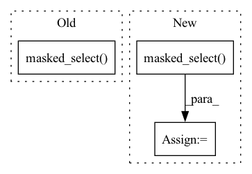

Pattern ID :30561

Before Change
test_responses = test_responses[:-1]
test_mask = test_mask[:-1]
test_target = torch.masked_select(test_target, test_mask)
opt = Adam(self.parameters(), learning_rate)
aucs = []
After Change
test_y = (self(test_questions, test_responses) * test_delta)\
.sum(-1)
test_y = torch.masked_select(test_y, test_masks).detach()
fpr, tpr, thresholds = metrics.roc_curve(
test_targets.numpy(), test_y.numpy()
In pattern: SUPERPATTERN
Frequency: 4
Non-data size: 3
Instances
Fragment ID: 90364835
Project Name: hcnoh/knowledge-tracing-collection-pytorch
Commit Name: 02fafdf350373b54da7e953cb2177109fba73d7f
Time: 2021-03-15
Author: rhc0624@gmail.com
File Name: models/dkt.py
M Class Name: DKT
N Class Name: DKT
M Method Name: train_model(5)
N Method Name: train_model(5)
M Parent Class: Module
N Parent Class: Module
M File Name: models/dkt.py
N File Name: models/dkt.py
M Start Line: 47
M End Line: 131
N Start Line: 47
N End Line: 151
'>
Before Change
assert len(x.shape) == 3, f"Shape of input should be (batch_size, row_num, feat_dim), but got {x.shape}"
b, rownum, feat_dim = x.shape
nan_mask = torch.isnan(x).any(dim=2, keepdim=True)
x_no_nan = x.masked_select(~nan_mask).reshape(b, -1, feat_dim)
cov_x = _cov_torch(x_no_nan, rowvar=False)
return cov_x
After Change
nan_mask = torch.isnan(x).any(dim=2, keepdim=True)
cov_x = []
for i in range(b):
x_no_nan = x[i].masked_select(~nan_mask[i]).reshape(-1, feat_dim)
cov_x.append(_cov_torch(x_no_nan, rowvar=False))
return torch.stack(cov_x)
'>
Fragment ID: 90364822
Project Name: lornatang/real_esrgan-pytorch
Commit Name: 68d7db44a32673c3c491acbb95e4823641ed412a
Time: 2022-11-03
Author: liuchangyu1111@gmail.com
File Name: image_quality_assessment.py
M Class Name: AnonimousClass
N Class Name: AnonimousClass
M Method Name: _nancov_torch(1)
N Method Name: _nancov_torch(1)
M Parent Class:
N Parent Class:
M File Name: image_quality_assessment.py
N File Name: image_quality_assessment.py
M Start Line: 635
M End Line: 638
N Start Line: 638
N End Line: 644
'>
Before Change
logits_ba = torch.matmul(z_j, z_i.T) // NxN
avg_self_similarity = logits_ab.diag().mean().item()
avg_other_similarity = logits_ab.masked_select(~torch.eye(batch_size, dtype=bool)).mean().item()
sb_logger.record("avg_self_similarity", avg_self_similarity)
sb_logger.record("avg_other_similarity", avg_other_similarity)
After Change
avg_self_similarity = logits_ab.diag().mean().item()
logits_other_sim_mask = ~torch.eye(batch_size, dtype=bool, device=logits_ab.device)
avg_other_similarity = logits_ab.masked_select(logits_other_sim_mask).mean().item()
sb_logger.record("avg_self_similarity", avg_self_similarity)
sb_logger.record("avg_other_similarity", avg_other_similarity)
'>
Fragment ID: 90364823
Project Name: humancompatibleai/eirli
Commit Name: ba441307091690a629a3b699f9dced09cc1d37fb
Time: 2020-08-31
Author: sam@qxcv.net
File Name: src/il_representations/algos/losses.py
M Class Name: SymmetricContrastiveLoss
N Class Name: SymmetricContrastiveLoss
M Method Name: __call__(4)
N Method Name: __call__(4)
M Parent Class: RepresentationLoss
N Parent Class: RepresentationLoss
M File Name: src/il_representations/algos/losses.py
N File Name: src/il_representations/algos/losses.py
M Start Line: 204
M End Line: 208
N Start Line: 204
N End Line: 209
'>
Before Change
logits_ba = torch.matmul(z_j, z_i.T) // NxN
avg_self_similarity = logits_ab.diag().mean().item()
avg_other_similarity = logits_ab.masked_select(~torch.eye(batch_size, dtype=bool)).mean().item()
sb_logger.record("avg_self_similarity", avg_self_similarity)
sb_logger.record("avg_other_similarity", avg_other_similarity)
After Change
avg_self_similarity = logits_ab.diag().mean().item()
logits_other_sim_mask = ~torch.eye(batch_size, dtype=bool, device=logits_ab.device)
avg_other_similarity = logits_ab.masked_select(logits_other_sim_mask).mean().item()
sb_logger.record("avg_self_similarity", avg_self_similarity)
sb_logger.record("avg_other_similarity", avg_other_similarity)
'>
Fragment ID: 90364824
Project Name: humancompatibleai/eirli
Commit Name: 0399d5ee75b1d0e5783f377d505366862a317577
Time: 2020-08-31
Author: sam@qxcv.net
File Name: src/il_representations/algos/losses.py
M Class Name: SymmetricContrastiveLoss
N Class Name: SymmetricContrastiveLoss
M Method Name: __call__(4)
N Method Name: __call__(4)
M Parent Class: RepresentationLoss
N Parent Class: RepresentationLoss
M File Name: src/il_representations/algos/losses.py
N File Name: src/il_representations/algos/losses.py
M Start Line: 204
M End Line: 208
N Start Line: 204
N End Line: 209